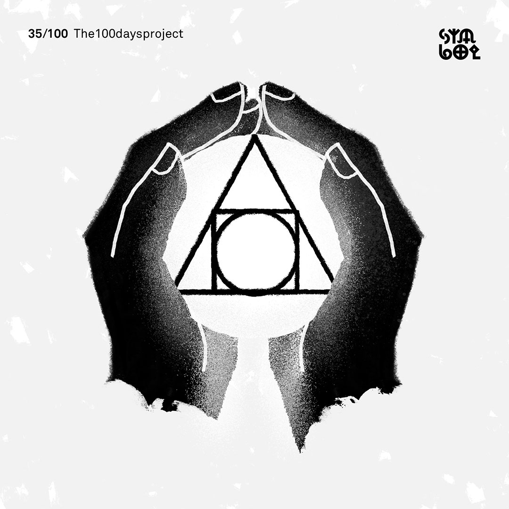
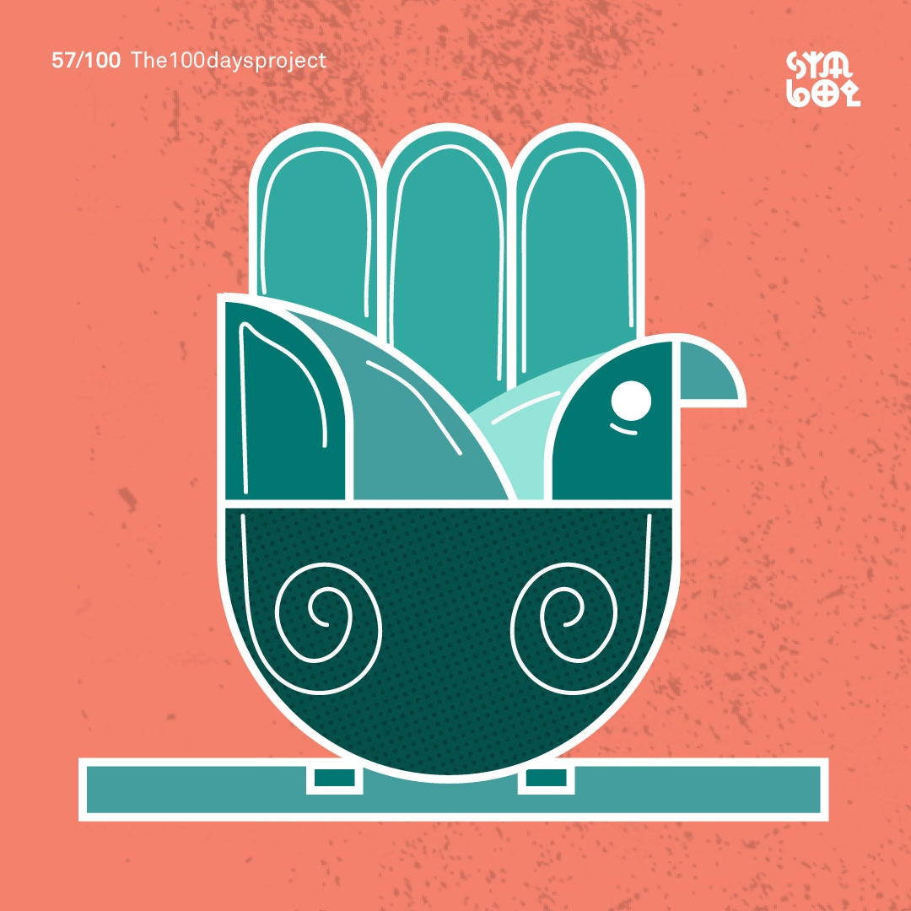
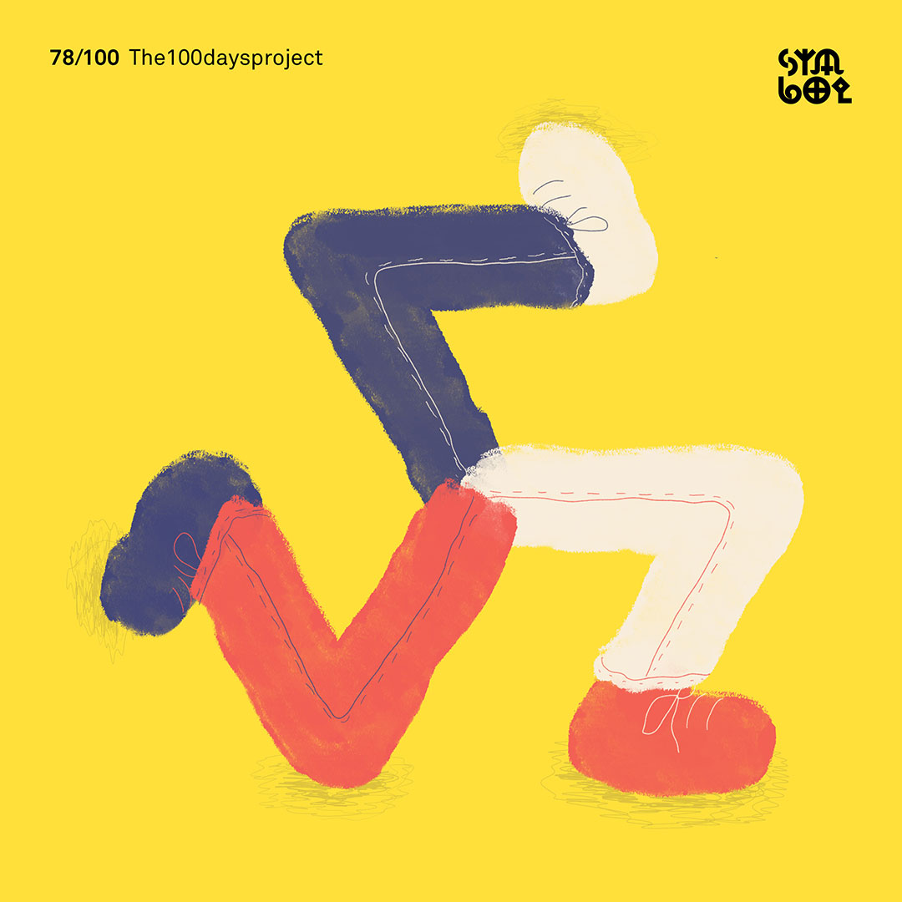

For over 40,000 years, humans have used logographic symbols to communicate complex ideas. Whether it’s the manifestation of a god, or a unified graphic language to communicate cultural values, the symbol has always been driven by concept.
This is no different today. As a brand strategy and design agency, Emotive Brand uses the same time-tested principles of symbology to communicate complex concepts quickly.
One of the most ancient symbols, originates from the palm print and is the sign of eternal recurrence. It has no beginning or end and signifies all that exists and nothingness at the same time.
Pentagram
The pentagram has changed meaning roughly every 1,000 years. From the morning and evening star in Palestine to the contemporary Wiccan symbol for the elements and spirit.
Trident
Weapon of Poseidon, Neptune, and Hindu god Shiva. It is often associated with food, water, and portioning offerings.
Rising & Falling Sun
Symbols found in astrological systems.
Air
The upward pointing triangle became the hot and humid element of air during the Middle Ages.
Color Intensity
An ideogram for color intensity control on TVs.
Wolftooth
Wolftooth wolftooth wolftooth.
Bird
North African Berber tribe symbol for bird. It's a positive motif which carries baraka.
Spring
Part of a system of seasonal symbols from ancient Germanic tribes.
Sun
The sun is found as a symbol across all cultures and is the basis of many prehistoric religions.
Ancient Ocean Symbols
Universal brotherhood
In ancient Nordic tribes, this rune stood for good annual crop. The Hopi Native American tribe used this symbol for universal brotherhood.
Rebirth
This is one of the oldest ideograms. It's been found on the walls of prehistoric caves in pre-Columbian America and also in Bronze Age Europe. It's associated with growing, rebirth, and genesis.
Hermes' lyre
Hermes' Lyre found on ancient coins and pottery.
Crows feet
Nothing more is known about this symbol.
Rain clouds
Native American symbol for rain clouds.
Windmill
Nothing more is known about this symbol.
Primordial Hill
The primordial hill is of ancient Egyptian origin. Symbolizing the building blocks for creation, this served as inspiration for the great pyramids.
Wisdom
Native American symbol for wisdom.
Triangle
The triangle. One of the most ancient symbols in the world. Ancient Mayans built their entire numerology and mythos from the triangle, seeing it first in the scales of a rattlesnake.
Mother Earth holding her child
This sign has been seen on pre-Columbian engravings and rock paintings in Arizona.
Light
This symbol has been used since antiquity to signify the radiation of light or the release of energy. Now we see variations of it everywhere, from comic books to our computer keyboards.
4 Elements
Hopi native american symbols for the elements.
Rub el Hizb
Rub el Hizb, the 8-pointed star. This symbol is used as an end of chapter marker in Arabic calligraphy.
Spiral
The spiral has many meanings across cultures. In this instance, we are highlighting homecoming.
Eye
Moroccan Berber tribe symbol for eye.
Staff of Hermes
The Staff of Hermes has been used to signify medical centers for centuries. Snakes in ancient Greek culture were used in healing rituals and the shedding of the skin was seen as regenerative.
Water
Found in the earliest system of Chinese iconography, this is a nearly universal symbol for water.
Staff of Adad
Representing lightning bolts, this is the Staff of Adad, the storm god of ancient Babylon.
Stussy S
Not much is known about this globally-known symbol. Some say that children are born with the ability to draw this form.
Ouroborous
A snake eating its tail is found across the world, from the Nordic world serpent circling the earth, ancient Egyptian signifying rebirth, early Vedic texts referencing the cycle of Samsara, to the Mayan god Kukulkan who foreshadows rain.
Nordic symbol
Nordic symbol found as a pattern in clothing.
Usins
Symbol for Usins, the Latvian god of bees, light, and horses.
Enneagram
Enneagram, the essence of being in cabbalistic mysticism.

4 Elements
The Art of Alchemy. This symbol contains the four elements in one structure.
Married couple
The Nsibidi style of communication in Africa uses this symbol to indicate a married couple.
The Star of Ishtar
The Star of Ishtar or Star of Inanna is a symbol of the ancient Sumerian goddess Inanna and her East Semitic counterpart Ishtar. Alongside the lion, it was one of Ishtar's primary symbols. Because Ishtar was associated with the planet Venus, the star is also known as the Star of Venus.
Two witnesses, one lying
The Nsibidi style of communication in Ghana, Africa uses this structure to indicate that two witnesses contradict each other and one is telling the truth (the straight line).
Phaleg
The symbol for Phaleg, the third Olympic spirit who rules over Mars.
Opposition
This is one of the most important signs in astrology and astronomy. It means opposition.
Unknown
This symbol is found on Bronze Age objects as well as Nordic rock carvings. There is no discernible meaning, however it is very close in form to an Icelandic war protection stave and can be seen as multiple swords in the same object.
Sun Wheel
This is a variation of the Sun Wheel, which is thought to hold great cosmic powers that impart life, abundance, prosperity, fertility, and peace onto the Earth.
Hamsa
The Hamsa, which symbolizes the open right hand, is a powerful sign of protection that is said to deflect the evil eye. Its origin has been traced to ancient Mesopotamia and it has significant across Jewish and Arabic cultures.
Unknown
This symbol has two parts – the triangle of divine power on top and the empty circle signifying life below. In some cultures, it is said to represent the right to inflict capital punishment.
Smiley
This iconic sign was first designed by Harvey Ball in 1963 and is also known as the acid sign. It has been associated with the psychedelic music scene and drugs like ecstasy and LSD.
Thought Bubble
This is a variation on the thought bubble sign, which is often used in comic strips to denote inner dialogue.
Information
This modern sign for information is a combination of the single line representing one fact and the circle representing all possibilities. When flipped upside down, it transforms into the exclamation mark, made up of the absolute and a single point of concentration underneath.
On/Off
The sign for on and off.
Unknown
This squiggle represents a mental state of confusion and is usually placed above the head of a figure in comic strips.
Fire
This symbol has been used in kabbalistic tradition to represent fire.
The sun wheel
The sun wheel was the Gaul's most beneficial symbol.
Zodiac
The Zodiac symbol system.
Friendship
Friendship between men.
Hekate
Hekate's symbol. It originated in Caria (modern day Turkey). Apparently the spinning symbol was used to alter consciousness.
Sigil of The Stag
Sigil of the Stag. The stag holds the keys to the Gates and it walks in worlds innumerable. It follows the wild path – the crooked path – and beckons for you to follow.
Meso Deko
Variation of the ancient Meso Deko bird symbol.

Eagle
The eagle can signify courage, wisdom, and strength.
Sankofa
Sankofa is a word in the Twi language of Ghana that translates to "go back and get it." It also refers to the Asante Adinkra symbol that is represented either with a stylized heart shape or by a bird with its head turned backwards and its feet facing forward.
Here and Now
Mindfulness symbol – here and now. When you see this symbol, it will work as a reminder for you to become aware of this present moment.
Orphic Egg
The Orphic Egg – Ancient Greek Orphic tradition is the cosmic egg from which hatched the primordial hermaphroditic deity, who in turn created the other gods.
Ouroboros
Ouroboros. A circular symbol depicting a snake, or less commonly a dragon, swallowing its tail. It's an emblem of wholeness or infinity.
Unknown
Nothing is known about this symbol.
Yin and Yang
In Taoism, yin and yang further symbolize the dueling sides of all things and the perfect balance and harmony of them. The circular movement of the fish represents the belief that all things in life are connected.
Forking Road
"Y-sign" Road forks.
Molar concentration
The concentration of the substance indicated between the brackets; molar concentration. In formulae elements enclosed to the inner sphere of attraction.
Unknown
The basic form of this is one of the oldest ideograms in the world. Round stones have been found with this structure inscribed on them in red in the Mas d'Azil Cave in France. It also appears in many ancient alphabets.
Lightning bolt
Celts established sacred places wherever lightning struck. Greeks associated it with Zeus and strength. The Native American thunderbird shot lighting out of its eyes when angry. The Tao Te Ching, a sacred philosophical text, speaks of lightning in terms of fertility.
Saint Hannes Cross
Saint Hannes cross, used as the command symbol on Apple keyboards. The symbol appears on a number of old objects in Northern Europe. It features prominently on a picture stone from Hablingbo, Gotland, Sweden, that was created between 400-600 AD.
Night King Spiral
The Children of the Forest / Night King spiral from Game of Thrones.
City
This symbol appears in both Mayan and Egyptian writing systems. In ancient Egyptian this symbol represented city.
Holy Place
Meaning Holy Place, an Adinkra print symbol found on clothes from Ghana. This is similar to Bronze Age Mediterranean symbols found on altars.
Ingz
The Nordic rune Ingz, associated with fertility.
Mirage
Egyptian hieroglyph symbol for mirage or illusion.
Power
Appearing in prehistoric European caves, this symbol is likely related to a simplified version used in 2,500 B.C. in the Euphrates-Tigris region. Egyptians used the simpler sign to represent the number 10,000,000 and as a sign for greatness or power.
Spring and Summer
This is a Germanic symbol for the months of spring and summer.
Cleave
This is an ancient symbol for cleaving or splitting that appears in the earliest Chinese writing system and in other very old writing systems.
Authority
Fu is a Chinese symbol for authority, divine power, and the ability to judge right and wrong.

Triskelion
Triskelion. Greek for three-leg. This symbol was associated with progress and competition in ancient Greece. The Triskelion is in a lot of places today: the flag of Sicily, the US Department of Transportation logo, and on the coat of arms of the Isle of Man.
Sin
The symbol for the new or waning moon was a symbol for the moon god Sin, the god of vegetation in the Euphrates region between 2,000-1,000 BCE.
Khamsa
This is the khamsa symbol, Arabic for the numeral 5. It is a symbol of good fortune, it stood for the support group or the blood revenge group. The closest male relatives not further than 5 degrees of separation from one another.
Alpha
This sign is an italic form of the first letter of the Greek alphabet: alpha.
Phoenician Staff
This symbol represents the semitic people of Phoenicia, ancestors of the modern day alphabets.
Thurisaz
This symbol is the rune Thurs, which is a name for giants in Norse mythology.
The Heart
The common heart symbol is actually a symbol from 600 BCE signifying an ancient form birth control. The symbol is based off of the shape of the now extinct silphium seed pod, a plant that only grew in Cyrene in the Mediterranean. This symbol was stamped on their coinage and over time that symbol took on a meaning of love.
Sowilō
This symbol is the sun rune. Associated with concepts of work, energy, and effect.
Tyr
This symbol is associated with the Norse god, Tyr. Tyr was the god of law and order, and the god of victory. Oftentimes, this symbol was carved into swords as it was believed to bring luck in battle.
Peorð
A Nordic runic symbol for pear tree.
Dove
In Christianity, this symbol represents the holy spirit taking the form of a dove. Compare this to the symbol for the Zodiac sign Libra.
Fire
In ancient times, this symbol was used for fire.
Infinity
In modern mysticism, the infinity symbol is identified with a variation of the ouroboros (an ancient image of a snake eating its own tail) that has also come to symbolize the infinite.
Yin Yang
This symbol is the earliest form of Yin Yang, representing the fundamental dualism of reality.
Vishnarupa
This symbol is held by a hand of the god Vishnu in his form of Vishnarupa.
Currency
Before the decimalization, asymmetric symbols with crossing curved lines were often used to denote currency.
Algiz
This rune is used to signify when someone has died on their tombstone. Compare this to the peace symbol. When the rune is flipped vertically, it means man.
The Rod of Asclepius
A serpent-entwined rod wielded by the Greek god Asclepius, a deity associated with healing and medicine.
The Magatama
This symbolizes "avoidance of evil" or "magic of good fortune." Worn as a bead, 'maga' means curved or bent, and 'tama' means precious stone or gem. It has been found in Japanese artifacts from the early Jōmon Period (13,000 - 300 BC).
69/Cancer
No, you are not looking at the 69 symbol. This is an abstract representation of a crab, the animal associated with the Cancer zodiac sign.
Dot-dot-dot
The ellipsis is one of the earliest known western symbols and versions of it have been found on ancient cave walls. Today this series of three dots in a row signifies a place where something has been omitted or left out and should be filled in by memory or imagination.
Summer
This symbol is from a system of signs that ancient Germanic tribes used to indicate the 4 seasons.
Cave
An old ideogram for cave, farm, village or fortress. The most common worldwide symbols are drawn all around the cave.
This year, the design team at Emotive Brand participated in the #100DayProject. We sat down with Senior Designer Jonathan Haggard to discuss symbols, simplicity, and how to be brave in your creative decision-making.
What is the #100DayProject?
The 100DayProject is a free art project started by Lindsay Thomson that takes place online. Every spring, thousands of people all around the world commit to 100 days of exploring their creativity. The idea is that you pick a theme or a project and rev on that 100 times. This year, our focus is on how ancient symbols inform contemporary brand design.
In the beginning, you tend to go for the most obvious choices, but by day 19, you find yourself really having to flex your creativity. It forces you to think from different perspectives and be thoughtful about your approach to rendering something in a unique way.
How did the team land on symbols?
We threw around a couple of ideas, but something about exploring symbols seemed to capture everyone’s imagination early on. Three or four years ago, I created a site called the State of Symbols, which is a designer-friendly repository for symbols. #100DayProject is a great way to build off that work and the fact that there are so many symbols with thousands of years of history fits the 100-day format nicely.
What excites you most about this project?
I think my favorite aspect is being able to research each symbol and the creative process of meditating on how to render it in a new way. With the State of Symbols, I was mainly recreating existing symbols. This project is much more about breathing new life into these ancient shapes and allowing yourself the time to reflect on the core idea in an illustrative way. That requires learning the history, what it means, and seeding it in your mind as a concrete thing.
Designer Keyoni Scott is helping create the animations, and he described the process “almost like doing crosswords or those daily mind games. It’s a good way to keep the creative mind sharp and fun to just create something daily. Nine times out of ten, I learn something that I didn’t know before and I think that’s amazing.”
What reference materials are you using in your research?
To me, there’s something about these print collections that are a little more legitimate than wandering for images online. You can find interesting things online, but it can be hard to tell if the person is just making stuff up without the original source. As Design Director Robert Saywitz said, “Projects like these allow you to explore different mediums beyond just the computer and brings inspiration to the forefront rather than waiting for it to arrive.”
What have you learned from the process thus far?
For one, just how many Venus stars there are. From far east Chinese symbols all the way to the Celtic, thousands of people throughout history have been looking at this planet and rendering it in different ways. Whether it’s a five-pointed or eight-pointed star, there’s something kind of beautiful about everyone drawing inspiration from the same thing.
Another thing is how symbols change over time. We tend to think about meaning being fixed, but certain figures like the pentagram have changed meaning roughly every 1000 years – from the morning and evening star in Palestine to the contemporary Wiccan symbol for the elements and spirit.
Lastly, the pace of the project is a challenge of its own. It needs to go out every single day whether it’s perfect or not, which forces me to be brave about decision making. Sometimes, that means bringing something to life through simplicity. For instance, the North African Berber tribe symbol for “bird” is built out five simple squares, but through the use of animation, it suddenly looks like it’s in flight.
What lessons can you apply to your design practice and the work we do for brands?
People have been trying to communicate the same ideas for 40,000 years. At its heart, symbols display concepts – and that’s what we do as a brand studio. We get the core concept of a company, distill it down to a simple form – the simpler the better – and we bridge the gap between a visual symbol and a series of beliefs, values, or products. As Senior Designer Beth Abrahamson said, “Symbols and their histories are inherently tied to branding, as most logos are variations of symbols that have been around for centuries and have been reinterpreted many times. Symbols are part of our vocabulary as designers and it’s super important to know where the primary forms come from and what they mean.”
Oftentimes, a company’s symbol has grown so strong that it creates a life of its own and can be simplified down to a basic geometric shape. Look at Google: the open circle form makes this shape accepting, something that has an inward motion that is exaggerated with the horizontal rule created to the right. Regardless of color, scale, or representation, it communicates the friendly nature that Google has come to embody.
Whenever I’m starting a new identity or branding project, I always try to see if there’s anything that communicates the message through the symbol itself. Sometimes, I’ll bring a symbol into Illustrator and start taking it down to its components. It’s critical to do that kind of research, because you don’t want to pick a symbol that’s highly offensive in a certain culture, or references something that’s counter to a company’s mission. Designers have a responsibility to know their history, produce great work, and keep these symbols alive.
Emotive Brand is a brand strategy and design agency in Oakland, California.